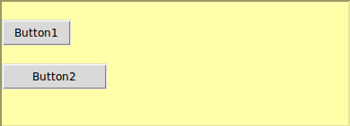

We're continuing the theme of laying out buttons in a frame. In this question, you'll need to add fixed spacing between your widgets.
You need to write a function create_layout that takes a frame as its only argument and adds two buttons on top of each other in the frame. The first (top) button should have the label "Button1", and the other should have the label "Button2". The callback (command) for both buttons should be the pressed function.
The first button should have 20 pixels of space above and below it. The second button should have 20 pixels of internal space on its left and right.
Both buttons should appear on the far left of the frame.
As in the previous question, there is no need to create a tk app (the root window and frame will be initialised for you).
The frame should appear as depicted below.

When you check your code a window should pop up showing your layout. Close the popup window before trying again or moving to a new problem.